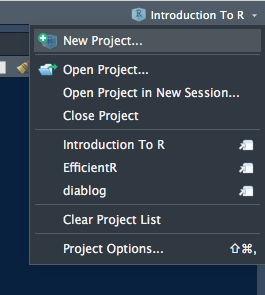
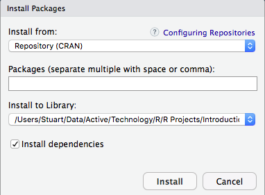

RStudio IDE
by Stuart Hertzog
March–May 2018
 is a free, open-source, professionally-designed IDE for programming in R (and other languages including Python and associated Python packages).
is a free, open-source, professionally-designed IDE for programming in R (and other languages including Python and associated Python packages).
RStudio is available in two free versions:
- RStudio Desktop, run locally as a desktop application. and
- RStudio Server, which runs on a networked or remote Linux server.
RStudio Server Pro is a full-service, paid edition for business and government use.
The advantages of using RStudio include:
- Free and open source for non-commercial use
- Easy to install on Windows, Mac, and Linux
- Well-designed, multi-pane GUI interface
- Paid, full-service, professional versions
- Git and Subversion versioning support
- Can import data from online sources
- Outputs to HTML, PDF, Word files
- Built-in R package management
- Keyboard shortcuts display
- Active community support
- Tab key code completion
- Ongoing development
- Well-documented
- Code folding
- It’s So Cool
- So is R!
From the RStudio web Site:
An IDE that was built just for R
- Syntax highlighting, code completion, and smart indentation
- Execute R code directly from the source editor
- Quickly jump to function definitions
Bring your workflow together
- Integrated R help and documentation
- Easily manage multiple working directories using projects
- Workspace browser and data viewer
Powerful authoring & Debugging
- Interactive debugger to diagnose and fix errors quickly
- Extensive package development tools
- Authoring with Sweave and R Markdown
The RStudio Interface
Above: The four-pane default RStudio Console. Pane arrangement can be changed.
The RStudio Console interface is flexible, rich, and capable:
- Tabs in each pane display different aspects of the current project
- Panes can share a column or be raised to fill an entire column
- File and Viewer panes can be zoomed into a larger new window
- Toolbars in each tab allow direct control of content elements
- Console comands are integrated into the running OS and files
- Console display can be changed by selecting a different theme
- Code syntax colors can be changed with another editor theme
RStudio Projects

RStudio advises that all data files and packages belonging to a project be contained in a dedicated directory as an RStudio Project with an executable .Rproj file.
Project management is built into RStudio. Start a new Project either from the File -> New Project main menu, or from the drop-down Project menu at the top right of the RStudio window (left).
New Project… opens a dialogue window that enables a Project to be created in a New or Existing directory, or from a Version Control Repository.
If an existing Project has unsaved changes, you will be asked to save them.
Open Project… brings up a File dialogue to locate an existing project directory and double-click its .Rproj file.
Open Project in New Session… allows you to create a new Project in a new R session without closing the existing Project R session.
Close Project will close the running R session and after saving any changes.
Existing RStudio Projects are listed below these to facilitate switching between active projects. Entries are created when a project is started by RStudio. This list can be emptied by selecting Clear Project List.
Project Options lets you set options specific only to the running Project.
Package Management In RStudio
Package management is an integral part of the RStudio interface. The Packages tab in the Files/Viewer pane shows all locally-installed and system packages.

Clicking the checkbox to the left of each package listing will load a package’s library into memory and make its functions available. The corresponding installation command will appear immediately in the Console plus any warning messages.
Packages with checkmarks have already been loaded. Unclicking a loaded package will unload it unless it is required by RMarkdown, in which case a warning message will inform you of that restriction and the package will remain loaded.
There are two ways of installing packages in the RStudio interface:
- Using the Install Packages GUI
- Entering commands in the Console.
The progress of any compilation or installation will be displayed in the Console.
The Install Packages GUI

Clicking Install on the Packages tab toolbar opens an Install Packages dialogue (left) that gives the choice of installing a package directly from CRAN or from a local package archive.
Multiple packages can be installed by separating the package names with commas. This installs and makes the packages available for use.
The Install to Library drop-down menu allows you to chose the Library where you want the package installed. The default location is selected: this is usually acceptable.
The location of the R installation on your system can be found by entering R.home(component = "home") in the Console. Other component values for the paths to specific directories of the current R installation are "bin", "doc", "etc", "include", library, "modules" and "share".
Clicking the Install dependencies checkbox will also download and install any other packages required for the requested package(s). This is recommended.
NOTE: This option will not work when installing from a local archive. In this case the dependencies must be installed first, or the installation will fail.
###Installing From The Console
Packages can be installed and loaded from the Console. The command sequence is:
install.packages("PackageName")
library(PackageName)
The delimiters " " or ' ' must be used to install a package.
Most R packages are hosted on CRAN, but some are only available on GitHub or Bitbucket. To install from these locations, the devtools package first must be installed, as described above.
Project Package Management
RStudio projects are built with different versions of R using the then-current versions of any installed packages. As both R and R packages are constantly being updated, this can cause problems when developing packages or RMarkdown documents.
There are four solutions to project package management:
Installing the
packratpackage to write package versions in apackrat.locktext file and store the packages in a projectpackratdirectory;Using MRAN (Microsoft R Application Network) to determine dependencies based on the “snapshot” of CRAN that Microsoft has stored on a given day;
Installing the
checkpointpackage to choose package versions based on a given day in MRAN history.
For more information, see Package Management for Reproducible R Code
Installing And Using packrat
Packrat stores all added packages in its own directory library, rather than relying on the user R library that is shared across all R sessions.
The advantages of this are:
Isolation: Installing a new or updated package for one project does not break other projects, and vice versa;
Portability: Enables moving projects from one computer to another, even across different platforms. (NOTE: this requires installation for each OS as the compiled libraries are not always identical);
Reproducibility: Ensures the correct package versions are assembled where and whenever the project is installed.
packrat is integrated into the RStudio environment so it is easy to install and initiate. The Packages tab in the Files/Viewer window has a packrat item menu. Clicking on this brings up the Packrat Options window:
It’s advisable to select the Automatically snapshot local changes option.
Clicking OK will download, install, and initiatepackrat in exactly the same way the same as issuing the commands from the Console:
install.packages(“packrat”)
packrat::init()
There also is an option in the New Project window to create a new project with packrat pre-installed and initiated.

Once packrat is up and running the Packrat link will become a drop-down menu (left), containing the following options:
Check Library Status… – shows if any packages require updating
Clean Unused Packages – removes unneccessary packages. If you want to keep a package from appearing in the Unused list, just add a library(PackageName) call to any .R file in your Project directory.
Export Project Bundle – creates a zipped bundle of your Project in the packrat directory, for transport to another system. The bundle contains application code, a manifest file, an html file, and a packrat folder with a packrat.lock file.
Packrat Options… – brings up the options window. (See above)
For more information see
Using Python In RStudio
reticulate
Until recently it has not been possible to easily use Python in RStudio. The newly-developed reticulate package provides a comprehensive set of tools for interoperability between Python and R within RStudio.
reticulate includes facilities for:
Calling Python from R in a variety of ways including R Markdown, sourcing Python scripts, importing Python modules, and using Python interactively within an R session.
Translation between R and Python objects (for example, between R and Pandas data frames, or between R matrices and NumPy arrays).
Flexible binding to different versions of Python including virtual environments and Conda environments.
reticulate embeds a Python session within your R session, enabling seamless, high-performance interoperability. If you are a Python developer, or an R developer who uses Python for some of your work, or a member of data science team that uses both languages, reticulate can dramatically streamline your workflow.